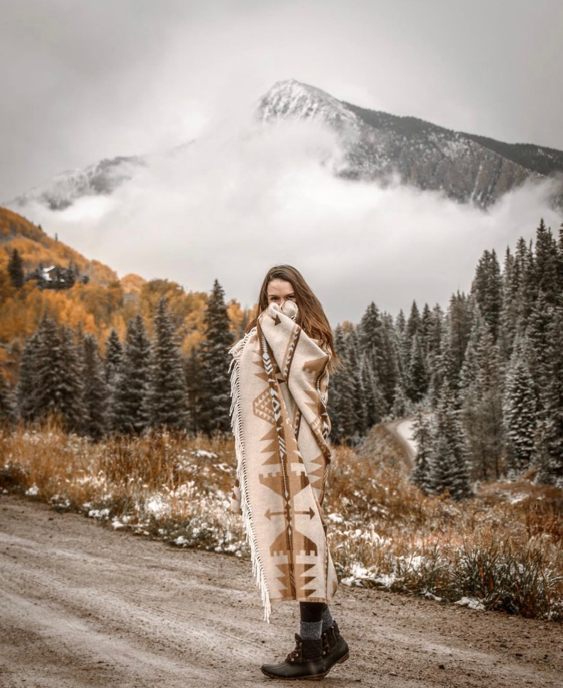

About Me
I grew up in Boulder, CO, and have always had a heart for art and design. Between high school and college I took a year off to travel, and then found myself in the quant town down of Gunnison, Colorado. It was here that I developed my love for the digital creative space, through photography and adobe creation. I got my BA in Marketing and Anthropology, and have explored the realm of sales, marketing and social media development since graduating college. In all of those roles, my interest in using creativity to solve problems, and love for telling stories stayed the same. Now. I am eagerly on the UX/UI role, and have loved being able to implement my passion for design to help companies identify their brand, tell their stories, and develop user experience and user interface to effectively communicate to their audience.